Identificación dinámica del monóptero de 1 GDL
Curva de reacción, método Fit 3 de Smith y Corripio y validación en MATLAB y Simulink.
El banco experimental
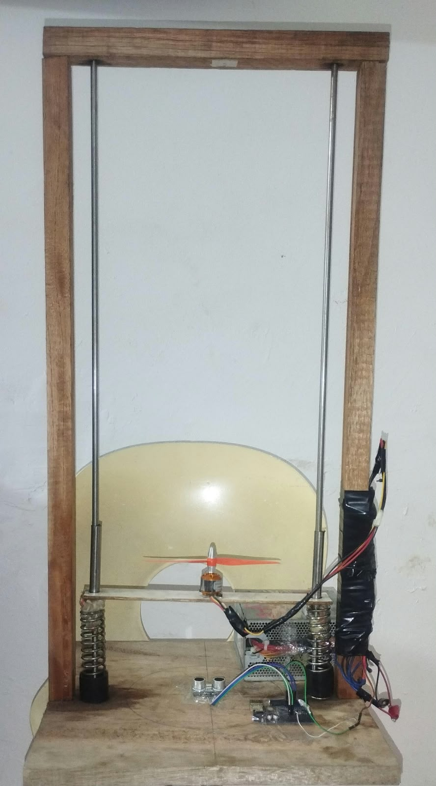
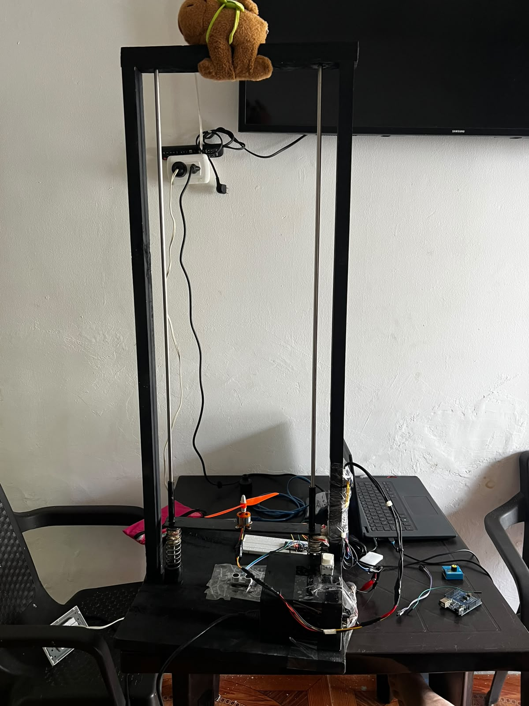
| Parte | Qué es |
|---|---|
| Actuador | Motor brushless con hélice; PWM de 1000 a 2000 µs |
| Potencia | ESC de 30 A alimentado con fuente de 12 V / 5 A |
| Sensor | HC-SR04 en la base, apuntando al carro |
| Control | Arduino Uno (13/09) y ESP32 (01/10), Ts = 50 ms |
| Recorrido | 100 cm; en reposo el sensor lee ≈ 11 cm |
| Seguridad | Failsafe: PWM a 1000 µs si y > 85 cm |
Protocolo del ensayo de escalón
- PASO 1Armado del ESC1000 → 2000 → 1000 µs, 2 s cada uno, hélice despejada
- PASO 2Sustentaciónu₀ = 1762 µs durante 5 s hasta que el carro flota
- PASO 3Escalón +50 µs1812 µs durante 10 s (más de 5τ)
- PASO 4Apagado y registro1000 µs y guardado del CSV
Programa de PWM aplicado
Datos crudos alrededor del escalón
| tiempo_ms | pwm_us | altura_cm |
|---|---|---|
| 4902 | 1762 | 16.50 |
| 4952 | 1762 | 16.50 |
| 5002 | 1812 | 16.50 |
| 5052 | 1812 | 16.50 |
| 5102 | 1812 | 16.50 |
| 5152 | 1812 | 16.17 |
| 5202 | 1812 | 16.17 |
| 5252 | 1812 | 17.15 |
| 5302 | 1812 | 16.82 |
Archivo datos_escalon_20260913_193329.csv. La altura tarda ~0.25 s en reaccionar al escalón.
Curva de reacción medida
Fit 3 paso a paso
Con p = 0.283 sale t₁ − t₀ = τ/3 y con p = 0.632 sale t₂ − t₀ = τ. Restando: τ = 1.5 (t₂ − t₁).
- Δu1812 − 1762 = 50 µs
- Δy34.96 − 13.45 = 21.51 cm
- K21.51 / 50 = 0.4302 cm/µs
- t₁y₀ + 0.283·Δy = 19.53 cm → 0.6427 s
- t₂y₀ + 0.632·Δy = 27.04 cm → 1.6906 s
- τ1.5 (1.6906 − 0.6427) = 1.5719 s
- t₀1.6906 − 1.5719 = 0.1188 s
t₁ y t₂ se interpolan entre las dos muestras que rodean cada cruce, así la resolución es mejor que Ts = 50 ms.
Modelo identificado frente a la medición
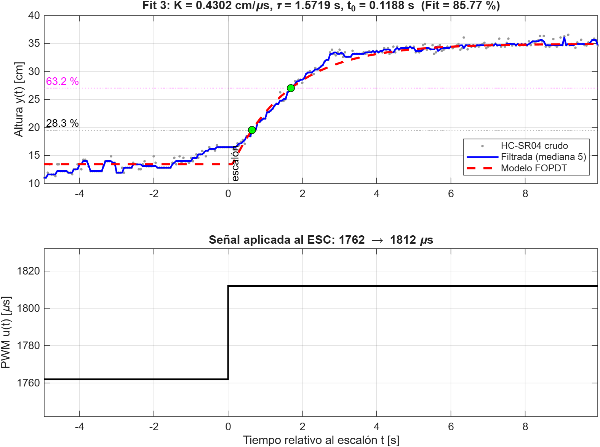
| Símbolo | Descripción | Valor |
|---|---|---|
| u₀ → u∞ | PWM | 1762 → 1812 µs |
| y₀ → y∞ | Altura | 13.45 → 34.96 cm |
| K | Ganancia estática | 0.4302 cm/µs |
| τ | Constante de tiempo | 1.5719 s |
| t₀ | Tiempo muerto | 0.1188 s |
| p | Polo −1/τ | −0.6362 rad/s |
| RMSE | Error cuadrático medio | 0.754 cm |
| Fit | Contra la señal cruda | 84.02 % |
| Fit | Contra la señal filtrada | 85.77 % |
Análisis de residuos
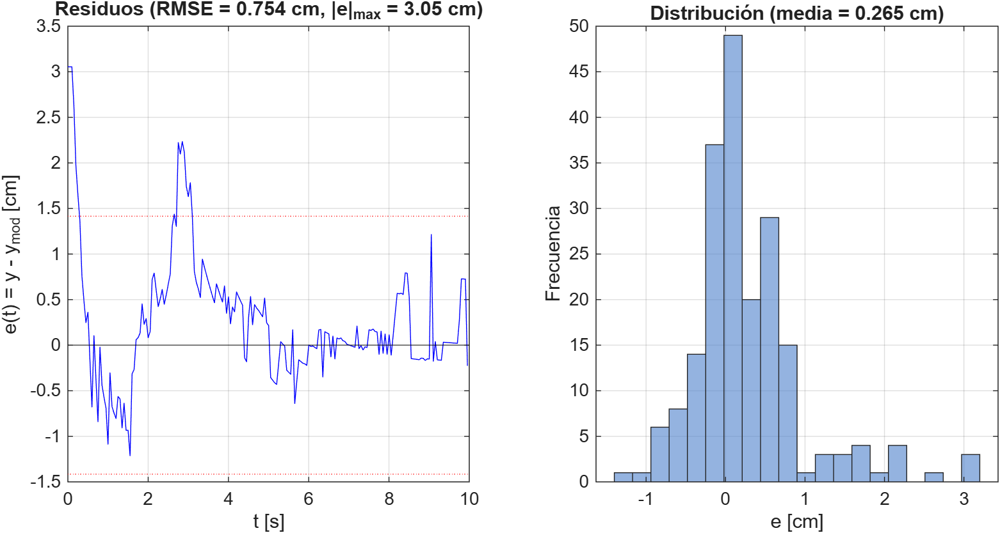
- El pico de 3 cm en t ≈ 0 viene de la deriva previa: el carro ya estaba en 16.5 cm y el modelo parte del promedio y₀.
- Entre 1 y 1.6 s el modelo va por encima y entre 2.5 y 3 s por debajo: la subida es levemente sigmoidal, huella de un segundo polo que el FOPDT desprecia.
- Los residuos no son ruido blanco, pero el 95 % cae dentro de ±1.4 cm, del orden de la resolución práctica del HC-SR04.
Estabilidad y respuesta del modelo
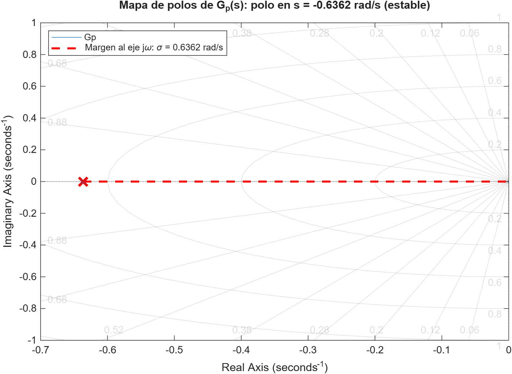
Un solo polo real negativo: la planta es estable en lazo abierto y responde sin sobreimpulso. Como 2/t₀ ≫ 1/τ, el retardo casi no cambia la dinámica dominante.
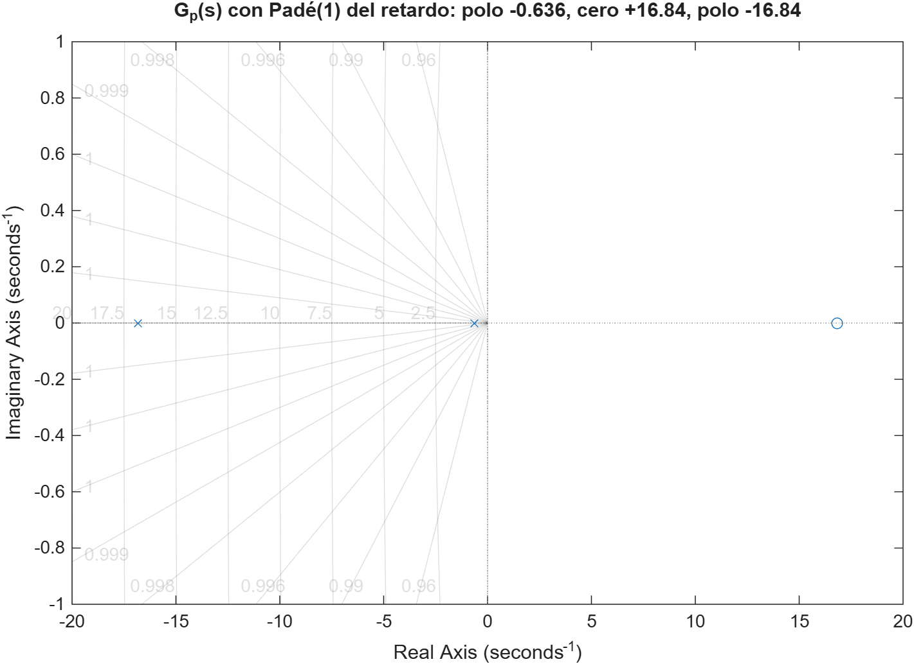
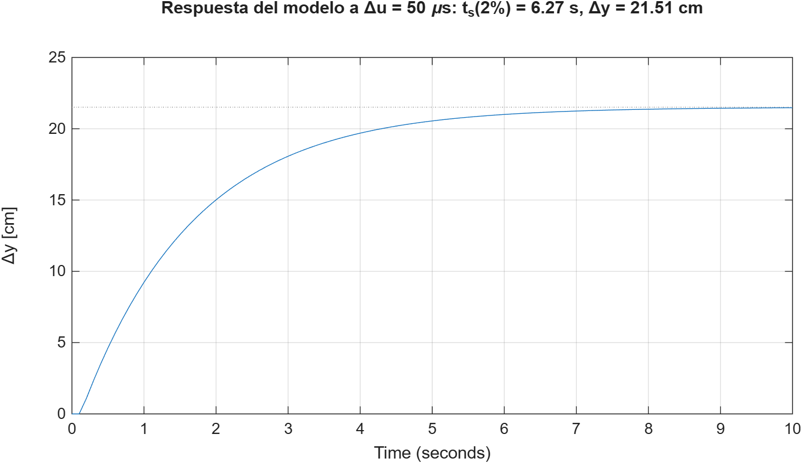
El mismo modelo en Simulink
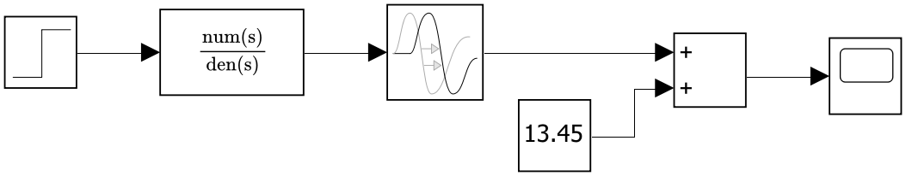
| Bloque | Parámetro |
|---|---|
| Step | t = 1 s, 0 → 50 µs |
| Transfer Fcn | [0.4302] / [1.5719 1] |
| Transport Delay | 0.1188 s |
| Constant (y₀) | 13.45 cm |
| Simulación | 0 a 15 s |
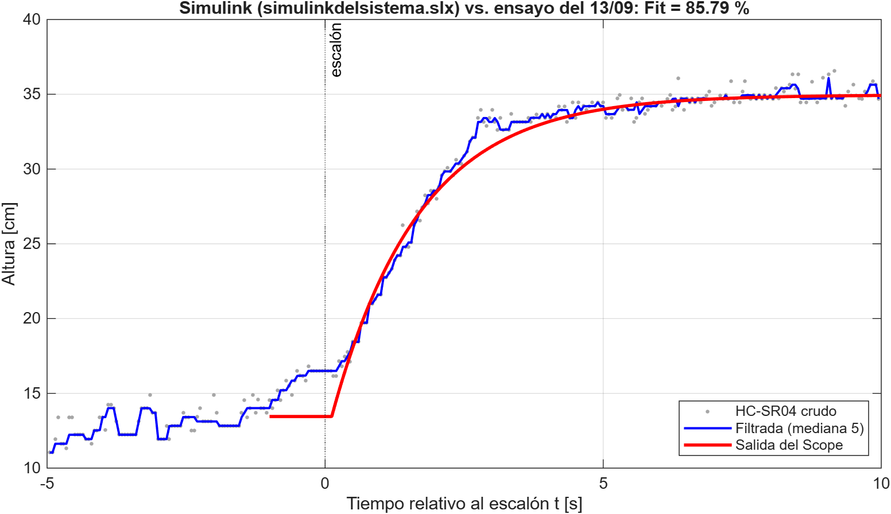
Cómo lo calcula el código
- Leer CSV
- Mediana 5
- Detectar escalón
- u₀, y₀, y∞
- Cruces t₁, t₂
- K, τ, t₀
- Fit, RMSE
- Figuras
| Script | Qué hace |
|---|---|
| IdentificacionFIT3.m | Lee el ensayo, calcula K, τ, t₀, Fit y RMSE y guarda resultados_fit3.mat |
| Polosmonocopter.m | pzmap, Padé del retardo y respuesta al escalón de 50 µs |
| ValidacionSimulink.m | Simula el .slx sin modificarlo y lo compara con el ensayo |
| ComparacionEnsayos.m | Aplica Fit 3 a los cuatro ensayos y corrige Δu por la resolución del PWM |
%% 6. MÉTODO FIT 3 — cruces del 28.3 % y 63.2 % y_28 = y0 + 0.283 * delta_y; y_63 = y0 + 0.632 * delta_y; i1 = find(y >= y_28, 1, 'first'); i2 = find(y >= y_63, 1, 'first'); % interpolación entre la muestra anterior y la actual t1 = interp1(y(i1-1:i1), t(i1-1:i1), y_28); t2 = interp1(y(i2-1:i2), t(i2-1:i2), y_63); tau = 1.5 * (t2 - t1); % constante de tiempo [s] t0 = max(0, t2 - tau); % tiempo muerto [s] K = delta_y / delta_u; % ganancia [cm/µs]
Cada script abre con un bloque de ayuda (help IdentificacionFIT3): qué hace, entradas, salidas, deducción del método y toolboxes que necesita.
Repetibilidad con el ESP32
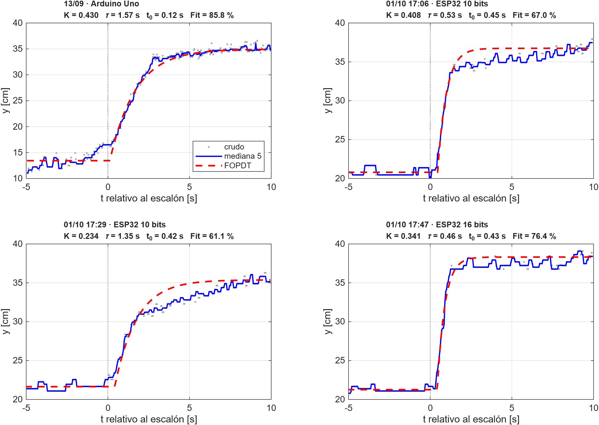
| Ensayo | Δu real | K | τ | t₀ | Fit |
|---|---|---|---|---|---|
| 13/09 · Uno | 50.0 | 0.430 | 1.57 | 0.12 | 85.8 % |
| 17:06 · 10 bits | 39.1 | 0.408 | 0.53 | 0.45 | 67.0 % |
| 17:29 · 10 bits | 58.6 | 0.234 | 1.35 | 0.42 | 61.1 % |
| 17:47 · 16 bits | 50.0 | 0.341 | 0.46 | 0.43 | 76.4 % |
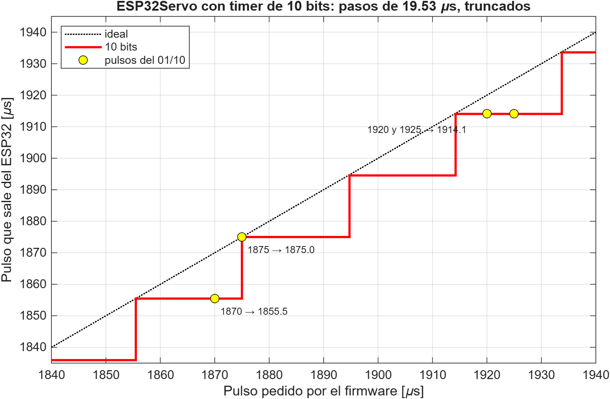
Conclusiones y paso a la Etapa 2
- El ensayo del 13/09 da Gp(s) = 0.4302 e−0.1188s/(1.5719s + 1) con Fit = 85.77 % y RMSE = 0.754 cm: cumple el criterio de la guía (Fit ≥ 80 %).
- Planta estable en lazo abierto, con un polo en −0.636 rad/s y t₀/τ = 0.076: el retardo es pequeño frente a la inercia.
- Simulink reproduce el ensayo con Fit = 85.79 %: el modelo está bien llevado a bloques.
- Los residuos muestran la deriva previa y un segundo polo leve: conviene repetir el ensayo en sustentación estable cerca de 20 cm.
- Con el ESP32 hubo que pasar el PWM a 16 bits; la planta actual tiene t₀ ≈ 0.43 s y debe re-identificarse antes de cerrar el lazo.
Sintonía SIMC del PID (τc = 0.8 s)
| Ganancia | Valor |
|---|---|
| Kp | 3.98 µs/cm |
| Ti = mín(τ, 4(τc + t₀)) | 1.57 s |
| Ki = Kp/Ti | 2.53 µs/(cm·s) |
| Kd (sobre la medida) | 0.3 µs·s/cm |